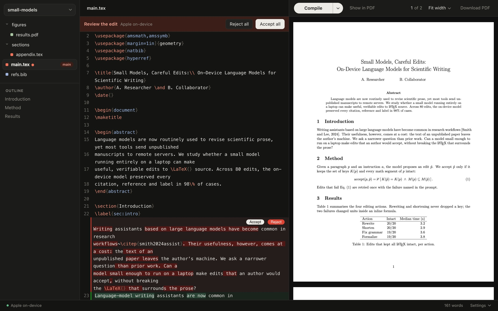

-
The AI is already on your Mac
It uses the model built into macOS. You don’t need an account or an API key, and it’s free.
-
It works offline
Write, compile and use the AI on a plane.
-
AI edits don’t break your LaTeX
If a suggestion deletes a citation or changes an equation, Corollary blocks it.
-
TeX sets itself up
No TeX installed? Corollary installs it, plus any package your paper needs.
-
Equations from a photo
Paste a screenshot or a photo of a whiteboard and get the LaTeX.
A free LaTeX editor for Mac that works like Overleaf, with AI that runs on your Mac. No account, and it works offline.

Free and open source · Apple silicon Macs
What makes it different.
Select text. Press ⌘K
Tighten it, fix the grammar, make it more formal, or ask for anything else. With nothing selected, describe a table, equation or paragraph and it’s drafted at the cursor. You see the change and keep what you like.
- Select
- Tighten
- Accept
- Blocked
Coming from Overleaf or Prism?
Download your project as a zip and drop it in. It opens and compiles the same way.
Prism shuts down on January 1, 2027.
- Same layout. Files, source and PDF side by side, with a Recompile button.
- Same compiler. TeX Live, like Overleaf.
- ⌘-click the PDF to jump to the line.
- Click an error to go to it, or ask the AI to explain it.
Drop a zip
- figures/
- sections/
- main.tex
- refs.bib
- neurips_2026.sty
paper.zip
What’s next.
- Next
Download open models like Qwen and Gemma inside the app, for bigger jobs like reviewing a whole paper.
- Then
Check that every reference in your .bib is real.
- Later
Share a project and edit it with co-authors.
Want something sooner? Star the repo or open an issue.
Why we made this.
When OpenAI said Prism would shut down, a lot of people needed a new home for their papers. Most of the options were other websites, so your unpublished work would sit on someone else’s server, and you couldn’t write offline.
At the same time, Macs with Apple Intelligence started shipping with a small language model that runs on the computer itself. It’s good at small jobs, like tightening a paragraph or explaining a compile error, and it’s free and private.
So we built the editor we wanted. It looks like Overleaf, sets up TeX for you, and keeps that model one shortcut away. It’s open source, so you can check that it does what we say.
Questions.
Does it cost anything?
No. It’s free and open source.
Which Macs get the on-device AI?
Apple silicon Macs with Apple Intelligence on macOS 26 or later. On older Macs, ⌘K can use Ollama instead.
Does anything I write leave my Mac?
No, unless you choose to connect an outside AI model. Corollary only goes online to download TeX packages and check for updates. Privacy details.
How good is Apple’s model at LaTeX?
Good at paragraph-sized edits and at drafting tables, lists and equations. Not at whole papers, and it leaves your results for you to fill in. How we tested it.
Can I share a project or write with co-authors?
Not in the app yet. Projects are ordinary folders, so Git, Dropbox or iCloud work.